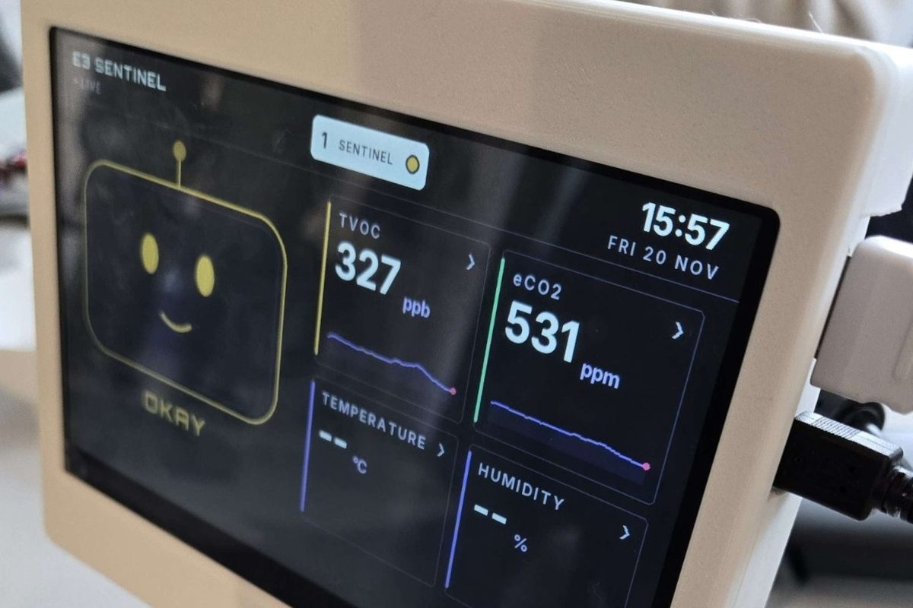

Mykola
Matsiuk
I design, build and test things by hand, from RC aircraft to wearables. Looking for an engineering internship in Ireland, summer 2027.
- Studying
- Mechanical Engineering, Trinity College Dublin
- Year
- Second of four
- Building now
- 3 m RC FPV glider
- Available
- 1 May to 15 September 2027
About me
I'm a second-year Mechanical Engineering student at Trinity College Dublin. I design, build and test RC aircraft and wearables, taking them from CAD and simulation to finished parts.
Right now I'm building a 3 m RC FPV glider, covering the full design, simulation, testing and manufacturing. I designed and optimised the wing airfoils and analysed their efficiency in different wind conditions. The build combines additive manufacturing with composites.
I'm also applying topology optimisation to lightweight structures: a chassis model and an FPV drone body. I modelled the external and internal forces, with the aim of cutting weight while keeping stiffness and strength. Separately, I worked on a wearable wind-drag prototype, backed by a physics model of drag force and a testable hypothesis.
I'm most interested in lightweight structures, wearable technology and assistive tech, and in how designs are turned into real parts. I'm looking for an engineering internship in Ireland in summer 2027 where I can design, build and test.
Tools and methods I use
- SolidWorks
- Fusion 360
- XFLR5
- Python
- Topology optimisation
- 3D printing
- Laser cutting
- Composites
- Balsa and foam construction
- Bambu Lab
Projects
-

Sentinel robot
A robot duo that monitors the MakerSpace. I did all the CAD and manufacturing.
View project
-

-
TODO: photo or CAD render
3 m glider
A 3 m wingspan glider for long-distance area investigation with an FPV camera.
View project
Engineering interests
- Mechanical engineering
- RC aircraft
- Composites
- CAD
- Topology optimisation
- Lightweight structures
- Wearable technology
- Assistive tech